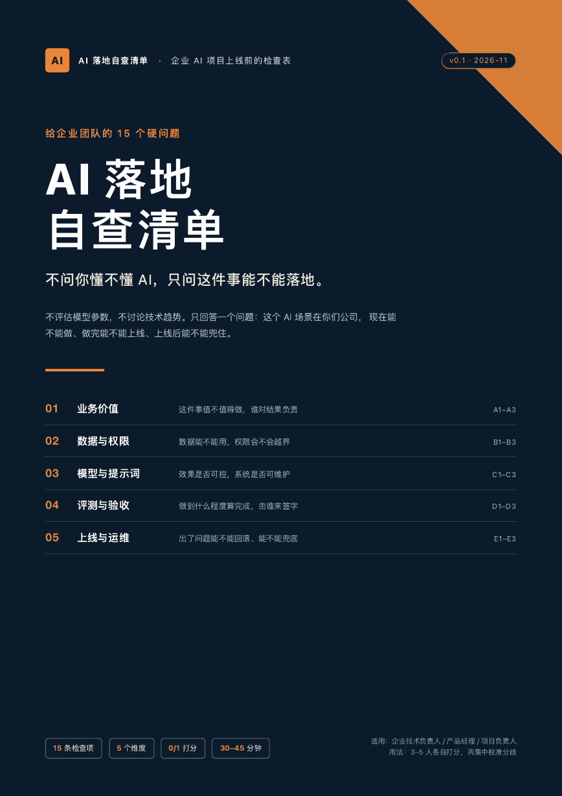

不评估模型参数，不讨论技术趋势。只看一件事：这个场景能不能在真实业务里交付、验收、运行。
场景、投入产出、业务 Owner。做不做，值不值得做。
数据来源、权限隔离、合规。能不能用，会不会越权。
选型依据、版本化、兜底。效果是否可控，系统是否可维护。
真实评测集、量化验收、小范围试点。做到什么程度算完成，由谁签字。
灰度、回滚、可观测性、运营责任。出问题能不能兜底。
3–5 人各打一遍分，再开会校准分歧。先看总分，再看一票否决项。

正在评估或推进 AI 落地的企业技术负责人、产品经理、项目负责人。不适合寻找“AI 万能方案”或想直接买模型 API 的人。